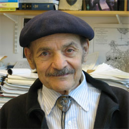
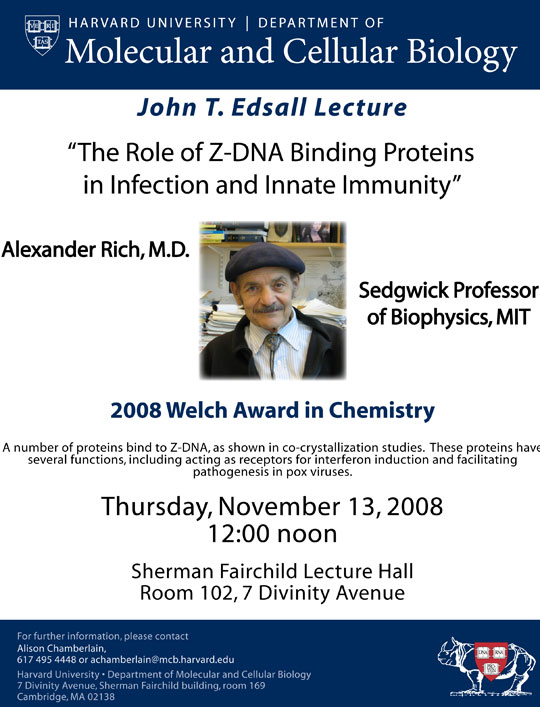
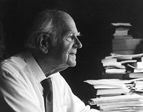

News Archives : 2008 : Alexander Rich to Deliver 2008 John T. Edsall Lecture
by Sebastian Stockman
November 10, 2008

Alexander Rich
Alexander Rich, M.D., the William Thompson Sedgwick Professor of Biophysics at the Massachusetts Institute of Technology, will give the 2008 John T. Edsall Lecture on Thursday, November 13. Dr. Rich’s lecture, ”The Role of Z-DNA Binding Proteins in Infection and Innate Immunity,” will focus on his current research, which involves the biological roles of Z-DNA – also known as “left-handed” DNA – and the proteins that bind to it.
In October, Dr. Rich received the 38th Welch Award in Chemistry for his “outstanding contributions to the understanding of the chemical and biochemical mechanisms in maintaining a living cell.”
“Dr. Rich is one of the towering intellects in science of the 20th and 21st centuries,” said the chair of the Welch Scientific Board, James L. Kinsey. “His numerous contributions have provided such important fundamental insights that virtually every important area of biochemistry or molecular biology today has Dr. Rich’s fingerprints on it.”
Dr. Rich earned his bachelor’s degree as well as his M.D. at Harvard, and he conducted his postdoctoral work at Caltech under one of the giants of 20th-century science – Linus Pauling. Dr. Rich took up his post at MIT in 1958, where he continued his trailblazing research. Some of his accomplishments include: he was the first to carry out DNA-RNA hybridization, which opened the door to understanding how information passes from DNA to RNA; he discovered left-handed DNA (about which he will say more in his lecture); and he was the first to discover the presence of DNA in organelles.
Dr. Rich is a member of the National Academy of Sciences, the American Academy of Arts and Sciences, the American Philosophical Society, the Institute of Medicine, and a foreign member of both the French and the Russian Academies of Sciences. President Bill Clinton awarded Dr. Rich the National Medal of Science in 1995.
Dr. Rich will give the 2008 Edsall Lecture on November 13, 2008, in the Sherman Fairchild Lecture Hall at 12 p.m.

| The Edsall Lecture is given annually in honor of John Edsall, a member of the faculty of Harvard University from 1928 to 1973, when he became emeritus but remained engaged in research for more than 20 years. He died in 2002 a few months short of 100 years of age. Dr. Edsall's scientific career started in Edwin J. Cohn’s Department of Physical Chemistry at Harvard Medical School, where he studied the properties of the muscle proteins and of the amino acids. These studies among many others led to the 1943 book by Cohn and Edsall, Proteins, Amino Acids and Peptides as Ions and Dipolar Ions, which became a classic in the field of protein chemistry. During World War II he had a key role in isolating blood proteins for the war effort and developed fibrin foam, a porous form of a fibrin clot for use in neurosurgical procedures. In 1954, Dr. Edsall joined the Faculty of Arts and Sciences and moved to the Biological Laboratories, where he started research on carbonic anhydrase. He was greatly concerned with education. He was a tutor in the biochemical sciences concentration for 40 years and Head Tutor from more than 25 years. He taught a course on biophysical chemistry at the college from 1940 until he retired; the course led to the writing of a textbook with his closest scientific colleague, Jeffries Wyman. He had a leading role in 1954 in the formation of the Committee on Higher Degrees in Biochemistry, a graduate program leading to the PhD degree in biochemistry; the committee became the Department of Biochemistry and Molecular Biology in 1967. Dr. Edsall was also a champion in the fight for the freedom and integrity of science. – Guido Guidotti |